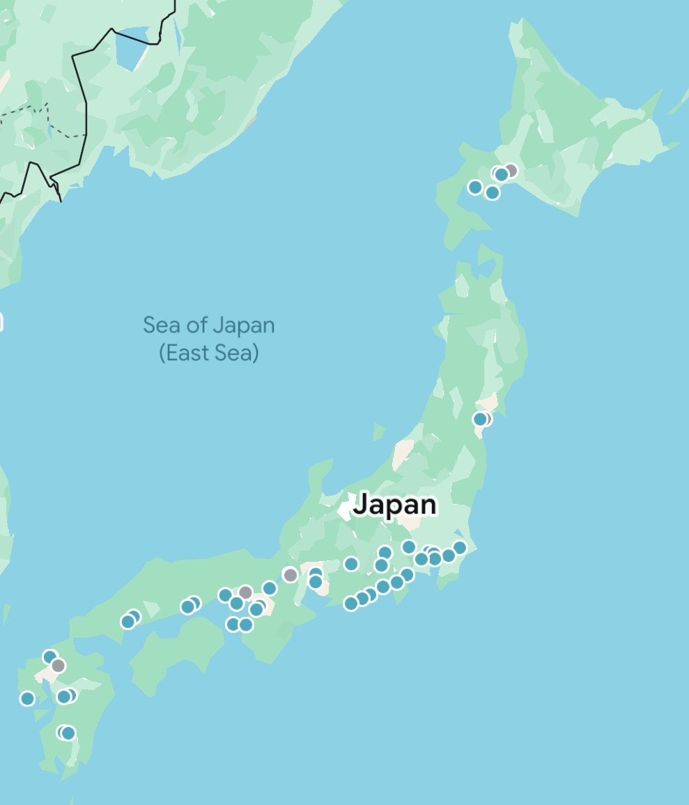

| Prefecture | Date | Description | Photos |
|---|---|---|---|
| Tokyo | N/A | N/A | |
| Saitama | N/A | N/A | |
| Kanagawa | N/A | N/A | |
| Shizuoka | N/A | N/A | |
| Yamanashi | N/A | N/A | |
| Nagano | N/A | N/A | |
| Aichi | N/A | N/A | |
| Shiga | N/A | N/A | |
| Nara | N/A | N/A | |
| Wakayama | N/A | N/A | |
| Kyoto | N/A | N/A | |
| Osaka | N/A | N/A | |
| Hyogo | N/A | N/A | |
| Okayama | N/A | N/A | |
| Hiroshima | N/A | N/A | |
| Fukuoka | N/A | N/A | |
| Nagasaki | N/A | N/A | |
| Kumamoto | N/A | N/A | |
| Miyazaki | N/A | N/A | |
| Miyagi | N/A | N/A | |
| Hokkaido | N/A | N/A | |
| Okinawa | N/A | N/A |